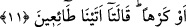

Peygamber şöyle buyurdu: “Enes! Bu günden sonra artık kimin işi gücü rızık peşinden
koşturmak olabilir!? Kaldı ki, rızık, sahibini, sahibinin kendisini aramasından daha
fazla aramaktadır.[12]
es-Sâib der ki:
Rızık insana âşık olmasaydı,
Buğday toprağı yarıp dışarı nasıl çıkardı?”
11. Sonra doğruca duman hâlinde bulunan göğe yöneldi, ona ve arza: İster
istemez buyruğuma gelin! dedi. İkisi de «İsteyerek geldik» dediler.
“Sonra doğruca… göğe yöneldi.” Bu ifâde; yerin nasıl takdir edildiğini beyan
ettikten sonra göğün ve yerin nasıl yaratıldığını açıklamaya başlamadır. Açıklamanın
özellikle arz ve arzdakiler üzerinde yoğunlaşmasının sebebi: Yüce Allah’ın
muhatapların durumlarıyla ilgilenmesinin ve geçim vasıtalarını daha kendilerini
yaratmadan belirlemiş olmasının, bunları îmâna teşvik edip inkâr ve taşkınlıktan
alıkoyacak bir özelliği olmasıdır.
“(__WORD__) sonra” edâtının anlamı âyet tamamen tefsir edildikten sonra anlaşılacaktır. Ancak
bu lafzın kullanılması, yüce cisimlerin (gök cisimleri) eşsiz bir şekilde yaratılmasına
verilen önemi gösterir.
(__WORD__), eğriliğin zıddıdır. Arapların, itidâlli ve dosdoğru bir hâle gelen dal hakkında
kullandıkları: (__WORD__) sözünden gelmektedir. Burada, yönelme ve kasd anlamına
haml edilmektedir; çünkü gerçek mânâsı, cisimlere âid bir özellik ve hususiyyet olup
Cenab-ı Hak böyle şeylerden münezzehtir. Mânâ şöyledir: Sonra kendi istek ve irâdesi
ile dosdoğru bir şekilde göğü hedefledi; bir başka tarafa sapmaksızın doğruca -yani:
göğün yaratılışına benzer bir başka şey yaratmak istemeksizin- oraya yöneldi.
Bir şey, bir başka yöne sapmaksızın dosdoğru bir şekilde -atılmış bir ok misali- bir
tarafa yöneldiği zaman: (__WORD__) “falan yere yöneldi” denilir.
“…Duman hâlinde bulunan...”
(__WORD__) ifâdesindeki (__WORD__), hâl bildirmekte olup (__WORD__) zamiri, ‘semâ’ya râcidir; çünkü
semâ, simâ’î bir müennestir. (__WORD__) lafzı ise, arzda bulunup da göğe yükselen, belli bir
harâreti bulunan lâtif parçacıklardır. el-Müfredât’a göre savrulup gitme özelliği bulunan
toz ve zerreciklere (__WORD__) denirken; buhâr lafzı, suların yüzeyinden dönen şualarla
birlikte göğe yükselen sulu ve nemli parçacıkları ifâde eder.
Mânâ: Gök duman hâlinde iken, yani “normalde ateşten yükselen bir duman”